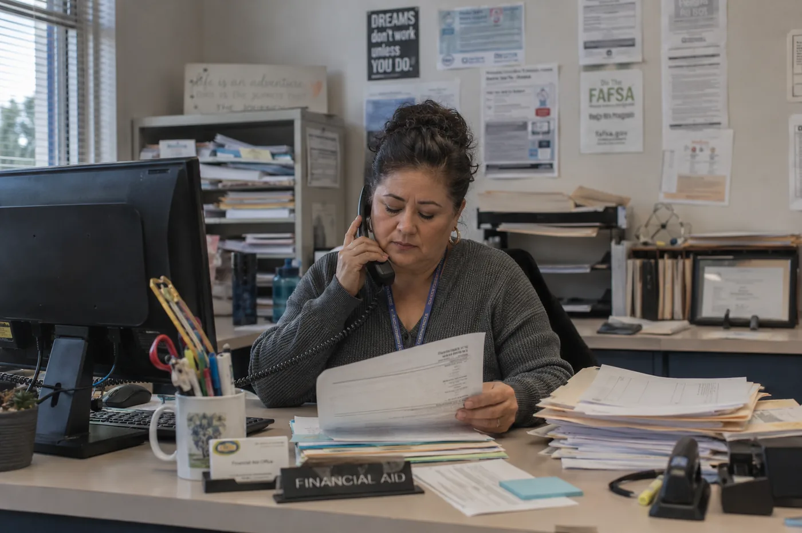
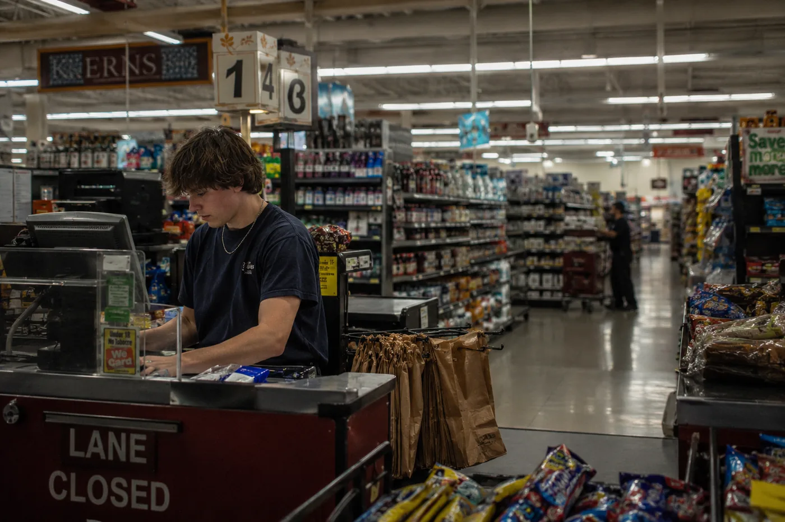

The gap isn't motivation. It isn't ambition. It is a sequence of forms, deadlines, and office hours that nobody had twelve minutes to explain.
The form is called an AB 540 Affidavit. It is two pages. It requires a parent's signature. It is available at the financial aid office at Imperial Valley College, at 380 East Aten Road in Imperial, California, open Monday through Thursday, 8am to 4:30pm, and Friday until noon. Miguel Rivas turned 18 in June. His father broke his hip in February. The form was due March 2.
Nobody told them about the form. That is not entirely true. The college's website lists it, buried under a tab for the California Dream Act Application, which Miguel had never heard of, because what he had heard of was FAFSA, because that was what his high school counselor mentioned once during a group session in November, and FAFSA was for citizens, and Miguel was a citizen, but his father was not, and the income section of FAFSA asks for parental tax information, and Miguel's father, who has worked packing lettuce in the Imperial Valley fields since 2004, has never filed a federal tax return.
This is where the gap begins. Not in August when Miguel did not show up for orientation. In November, in a school counseling session that lasted forty minutes, covered nineteen juniors, and mentioned FAFSA once.
Miguel is not confused about what he wants. He wants to study environmental science. He has wanted this since his sophomore year, when his biology teacher spent two weeks on the Salton Sea, which is forty minutes north of Brawley, which is shrinking, which is releasing arsenic dust that doctors have linked to the respiratory problems his grandmother has had since 2019. He knew what he wanted before anyone gave him language for it.
Last spring a platform called Kindred came to his classroom. It asks students questions, not about career categories, about what they care about, what pulls at them, what kind of problem they would choose to work on. Miguel answered honestly. He said he wanted to fix something that was already broken. The platform came back with environmental remediation, water resource management, air quality analysis. It told him Imperial Valley College had a pathway. It told him the pathway could transfer to UC Riverside.
Ninety-four percent of students who use the platform come out knowing their next steps. Miguel knew his next steps. The steps he knew were not the problem.
Carmen's Queue
Carmen Delgado has worked in the financial aid office at Imperial Valley College for eleven years. On a Thursday morning in April, there are six people in the waiting area when she arrives. She takes her seat, pulls up the queue, and the first file is a student whose CADAA, the California Dream Act Application, is flagged incomplete because the income section lists her father's employer as a labor contractor who pays in cash and has no EIN on record. Carmen has seen this before. She picks up the phone and calls the number on the file. It rings through to voicemail. She leaves a message in Spanish asking the student to come in with any bank statements or money order receipts that show regular income. She knows the student probably doesn't have those either.
She is not the villain of this story. She works inside a system that was not designed for the families she is trying to serve. The CADAA opened for the following academic year last October. The deadline was March 2. "By the time most students come to me," she said, "they've already missed it."
The most common reason she sees for incomplete applications is not fraud, not misrepresentation. It is documents. Parents who work cash-based agricultural labor and do not have tax records. Parents who have the records but cannot take a day off work to bring them in person, because the office does not accept documents by email, and their employers do not offer time off for paperwork.
"People think the application is the hard part," she said. "The application is not the hard part."
She has seen students complete the application and still lose financial aid because a GPA verification form, a separate document the high school, not the student, submits to the California Student Aid Commission, went out a week late. The commission does not accept late submissions. One form, filed by a third party the student cannot control, filed one week late because the registrar was managing senior graduation in May.
The note assumes you have a printer. It assumes you have an envelope and a stamp. It assumes you know your student ID number, which requires first creating an account in the college's online portal, which requires a personal email address. Miguel's mother, Rosa, does not have one. She uses her phone for calls. Her daughter uses it for everything else. Rosa packs vegetables from 5am to 3pm, then takes two buses home, then makes dinner. The phone is a shared resource managed by whoever has time.
"By the time most students come to me, they've already missed it."
Summer Melt
In high school, Miguel goes to a building every day where adults know his name and notice if he doesn't appear. In June, that building closes. His counselor, Mr. Vasquez, sends an email to the graduating class with a list of next steps. The email goes to a school address that stops working July 1.
Between 10 and 40 percent of students who plan to start college in the fall don't. The upper end is for low-income, first-generation, community college-bound students, which is Miguel's demographic. For Latino graduates, recent cohort data puts the figure at 59 percent. More than half of the students who say in June they are going to college in September don't get there. The cause, in study after study, is not motivation. It is the disappearance of the people and structures that held the plan in place.
Miguel's Mr. Contreras retired in June. Mr. Vasquez left for a different district in July. His father came home from the hip surgery in March to a rental house with one bathroom and no shower, spent April learning to use a walker, cannot drive, cannot return to work until September. The family's income is Rosa's packing wages and what Miguel makes working three shifts a week at a gas station on Highway 86.
He tried to complete the CADAA in April, when he still believed it was the same as FAFSA. He stopped at the section requiring his father's income documentation. He drove to the college on a Wednesday. The financial aid office was closed Wednesdays. He came back Thursday, waited forty minutes, and was told he needed to speak to a CADAA specialist who was not in. He should make an appointment. The next available slot was three weeks out.
He made the appointment. His gas station shift was changed. He rescheduled. The appointment moved again. It is late July. He has not yet spoken to a CADAA specialist.
He still wants to fix something that is already broken. The platform came back with the same answer it gave him a year ago.
Twelve Minutes Per Student
Brawley Union High School has approximately 2,300 students and four counselors. The recommended ratio is one to 250. At Brawley Union it is closer to one to 575. Before he left, Mr. Vasquez was managing college applications for 95 seniors while also handling mental health referrals, attendance interventions, discipline cases, and scheduling conflicts. He sat down once and calculated that during peak application season he could spend about twelve minutes per student per month on college guidance. He wrote the number on a piece of paper. He looked at it. He said it out loud. The number did not change.
Twelve minutes is enough time to say: there are two applications, FAFSA and the California Dream Act, and which one you file depends on your parents' status, and if your parents are undocumented there is a separate affidavit called the AB 540, and the deadline is March 2, and you will also need your high school to submit a GPA form separately, and the financial aid office is closed Wednesdays. It is not enough time to make sure any of it was understood.
In 2022 and 2023, 35 percent of California community college students identified as first-generation. At Imperial Valley College, where 81 percent of the surrounding population is Hispanic and more than a quarter were born outside the country, that percentage is higher. The college was built to serve this population. Its financial aid office, its CADAA specialists, its counseling staff, they are there specifically because these students need them. The system is not indifferent to Miguel. It is overwhelmed.
When Kindred told Miguel he had a pathway to UC Riverside through Imperial Valley College, it was telling him something true. The pathway exists. The coursework transfers. The financial aid, if he can access it, would make the cost manageable for a family earning what his family earns. The California Dream Act exists precisely for students like him.
What the platform cannot tell him is that the pathway has eleven steps, four non-obvious deadlines, two offices with limited hours, one specialist with a three-week backlog, and one form, the AB 540 Affidavit, that requires a parent's signature and was due March 2, and that no one in his life who knew this had twelve minutes to say so.
October 1

Miguel is still planning. He is looking at the spring semester now. The CADAA opens again in October. The deadline will again be March 2. He knows the office is closed Wednesdays. He knows to call before making the drive.
He used Kindred again in July, sitting in the gas station parking lot before his shift, because the air conditioning in the house was broken and it was 97 degrees inside. He answered the questions the same way he had a year earlier, because nothing had changed about what he wanted. He still wants to fix something that is already broken. The platform came back with the same answer it gave him a year ago.
The California Dream Act Application opens October 1. The deadline is March 2. The financial aid office at Imperial Valley College is at 380 East Aten Road, Imperial, California. Monday through Thursday, 8am to 4:30pm. Friday until noon.
He knows where to go. The office will open at 8.
Home: Hechinger Report lead piece. The Atlantic. Policy brief companion. Foundation pitch decks.
Audience: Donors focused on access not just aspiration. Policy makers. District and college administrators. Foundation officers. Education journalists.
Goal: The piece that tells donors what they're actually funding. The gap isn't motivation. The gap is structural and specific. The piece that makes someone wire money.